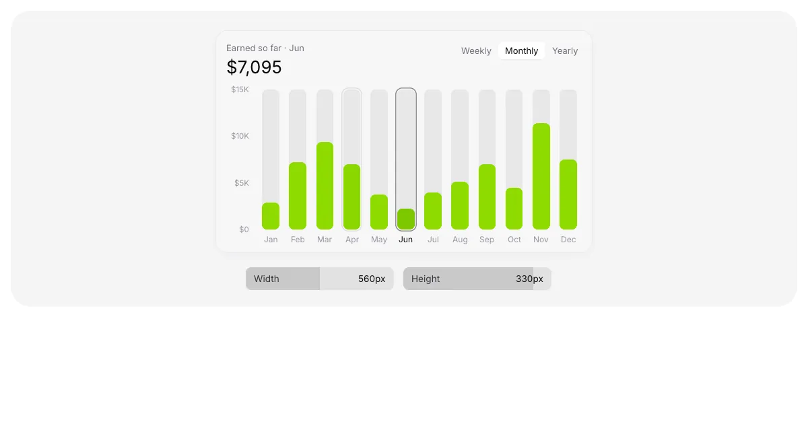

Earnings Chart Card
Rounded pill bars over a money axis with a Weekly / Monthly / Yearly switch that regrows the bars, a count-up headline and an outline on the hovered bar.

Usage
Add glowkit next to eframe:
cargo add glowkit eframeThen draw it inside any egui Ui:
use glowkit::prelude::*;
use glowkit::interactions::{BoardEarnings, BoardSeries};
ui.add(BoardEarnings::new("Earned so far").series(vec![
BoardSeries::new("Monthly", &["Jan", "Feb", "Mar"], vec![2400.0, 6100.0, 8300.0]).delta("+14.8%"),
]));Prefer to own the code? The glowkit CLI copies this component's source into your project, shadcn-style:
cargo install glowkit-cli
glowkit add board-earnings-chart-cardEquivalent to
If you know this pattern from BoardUI, Earnings Chart Card is the Rust version: an original egui implementation, not a port, that runs natively and in WebAssembly.
- Earnings Chart CardBoardUI
About Earnings Chart Card
Earnings Chart Card is one of 29 components in glowkit's Charts category. It lives in the glowkit-interactions crate, enabled by the interactions feature of glowkit (on by default). It reads its colors from the active glowkit theme, so it matches the rest of your app in light, dark or a custom brand theme, and every color, size and timing has a setter to override it.
Charts that draw in and respond to the pointer: line, area, bar, pie and donut, radar, radial, gauges, sparklines, scatter, heatmaps and calendar heatmaps, funnels, treemaps, candlesticks, Sankey diagrams and KPI tiles.